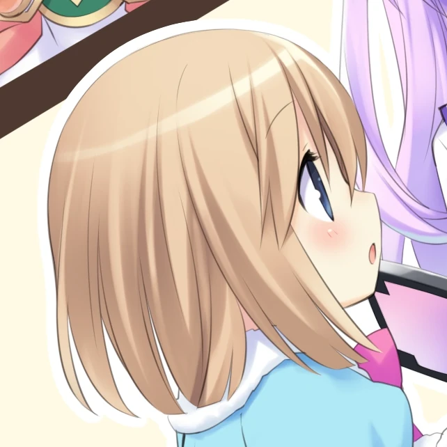
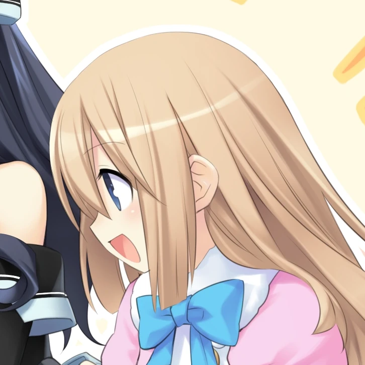
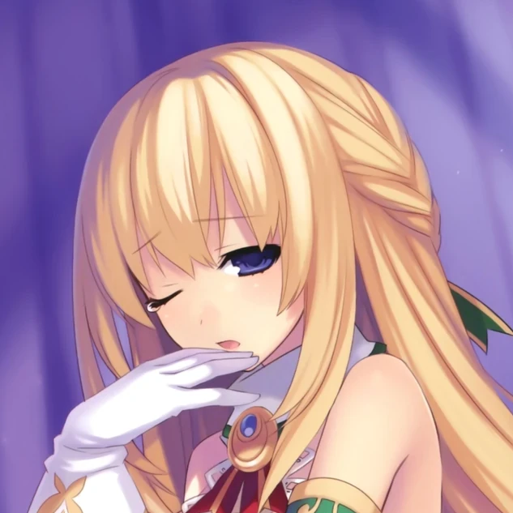
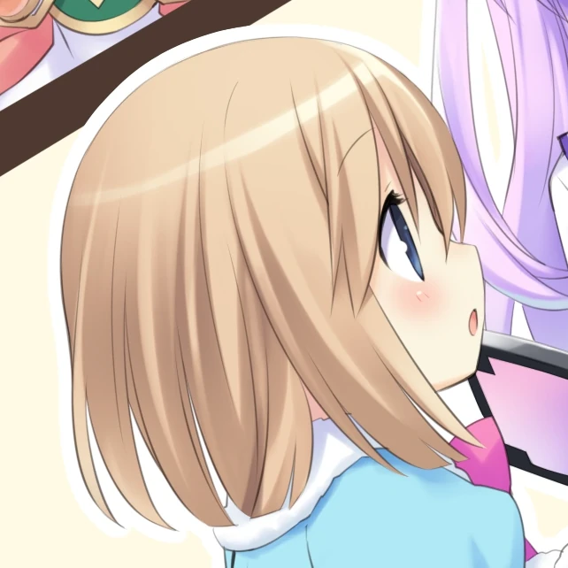
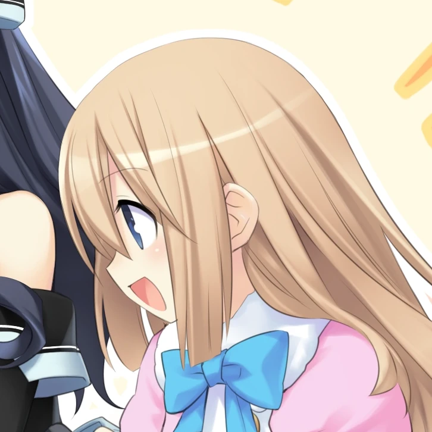
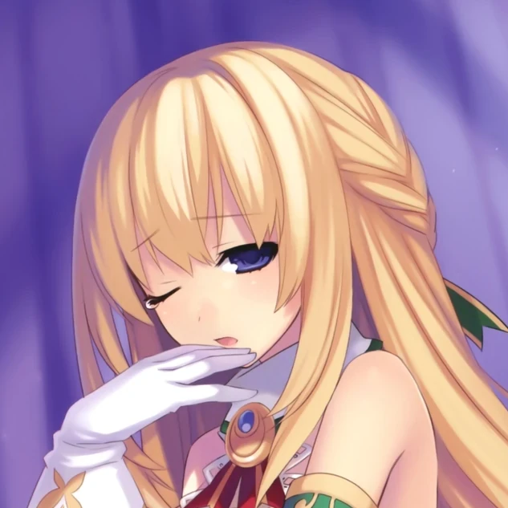

Noire
Uni
Blanc
Rom
Ram
Vert
Noire
Uni
Blanc
Rom
Ram
Vert
Emoji indicators are used to denote the current speaker. Example:
ㅤ
{💗} ❝ Yoo-hoo! It's your girl, Neptune~! ❞
Neptune waves at the website visitor.
ㅤ
The emoji used here is 💗, which corresponds to Neptune in her Human Form.
Both story and non-story RPs are welcome. Serious and non-serious RPs happen on this account.
SFW RPs are preferred, but lewd/semi-NSFW themes may appear. Proper NSFW RP should be in DMs or Twitter Circle only.
The majority of these muses are from a future set in the Super Dimension (OG/Re;Birth 1), not from the main Hyper Dimension. This is definitely not a way for me to write around the fact I haven't played all the games.
The exception is for characters like Uzume, who either do not have a Super Dimension counterpart and/or aren't even from the Hyper Dimension to begin with.